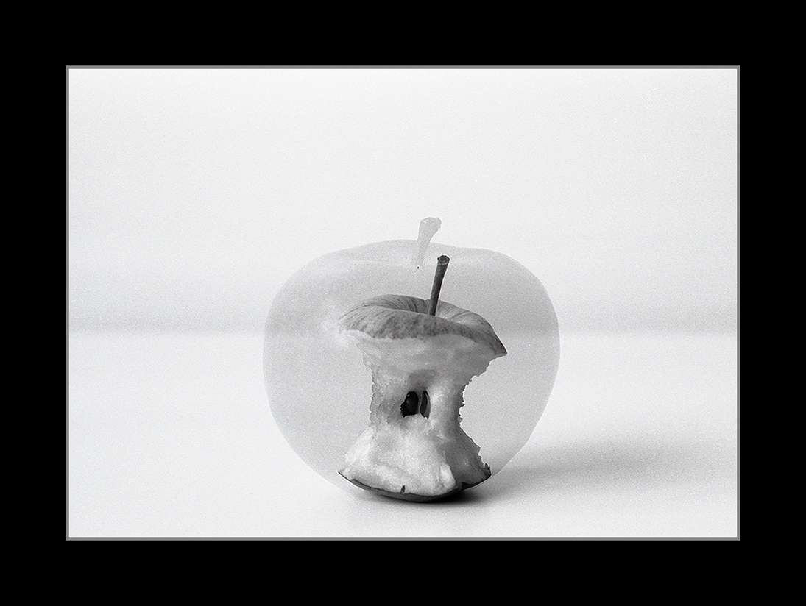
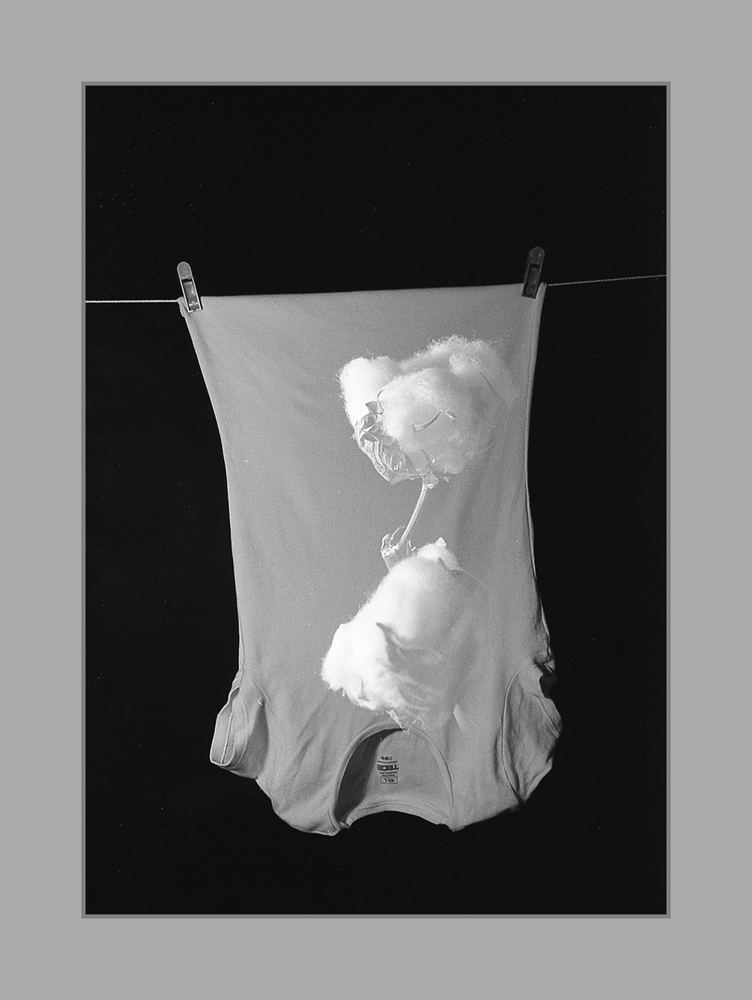
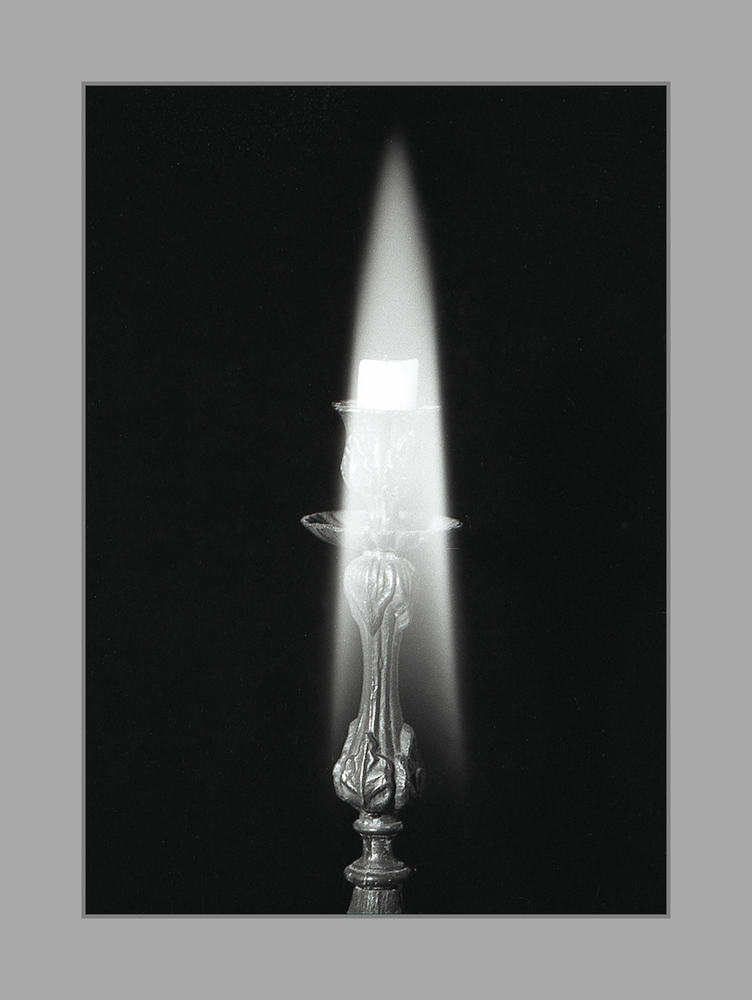
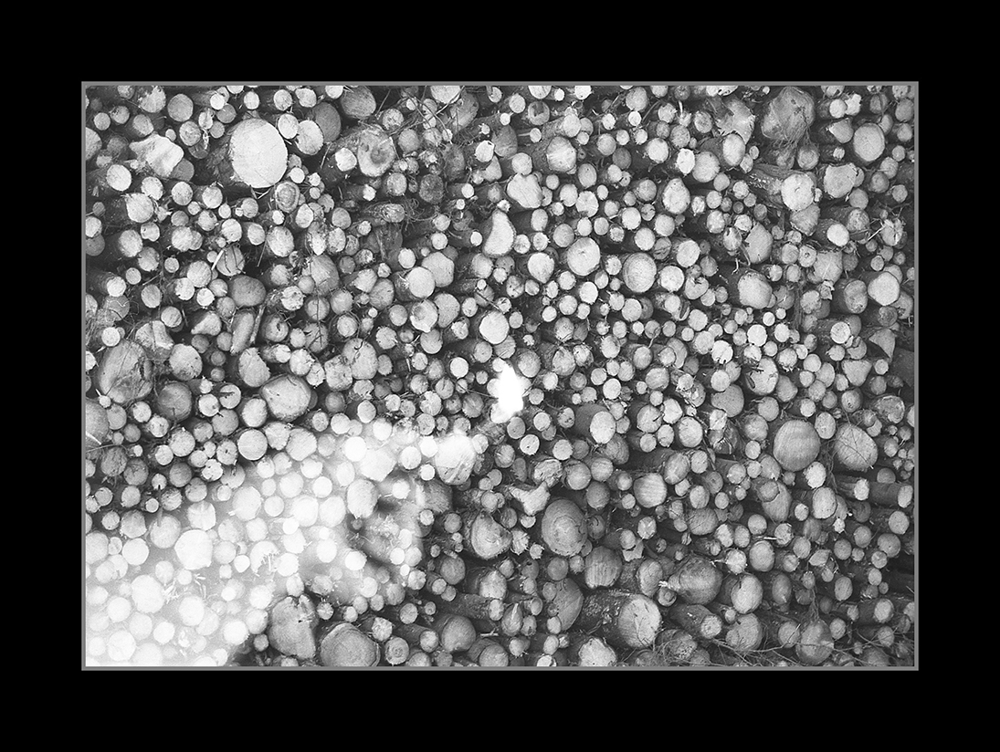
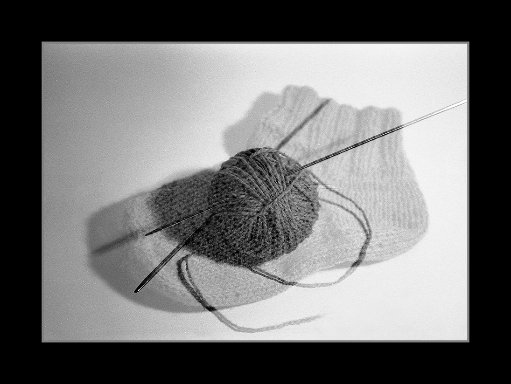
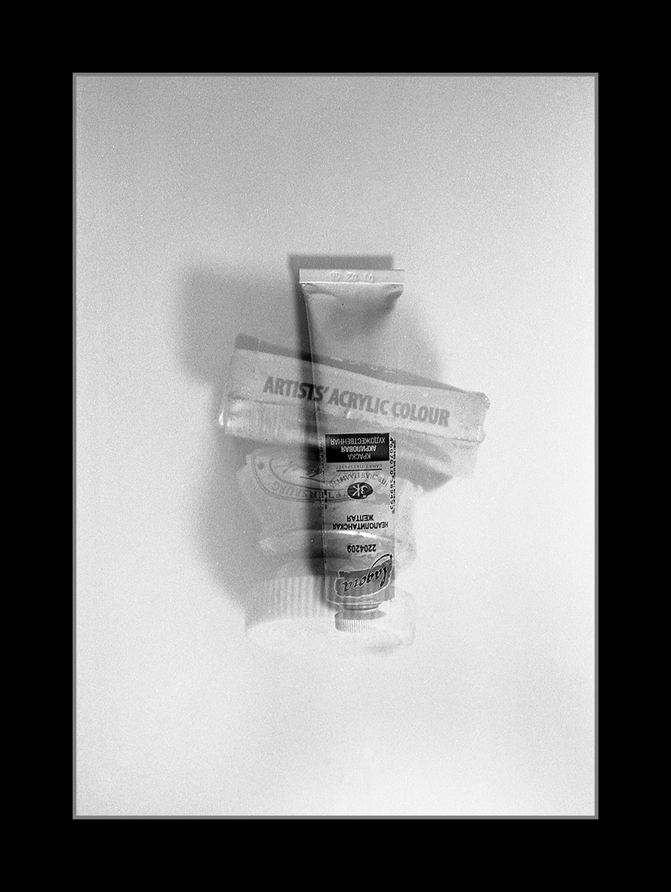
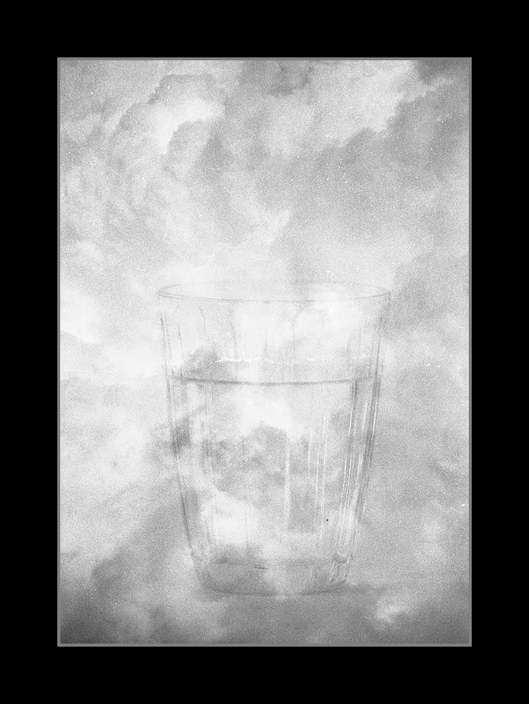

Life of things
I thank Max for making me a company while I was shooting a tree and my cat for breaking a creamer and making me to start this project.
The project is called “life of things” and it is about things. In a way, alive or not. Necessary and unnecessary. Those that we notice and most likely those that we don’t notice at all. What we use and throw away when we can no longer use it. It is an ode to fragility and invisibility. One frame. Two shots.
The idea of the project is to show small life of small things surrounding us in everyday routine. How things are changing, becoming waste or something different, how small things make big things in our lives.
May 2020
Creamer

Apple

Cotton
Tree
Rose

Candle

Match

Sock

Paint
Soil

Water